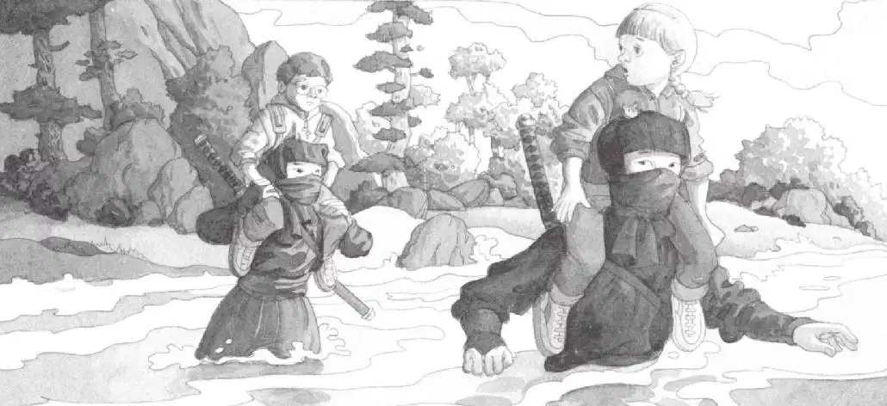

忍者摘掉了他们手上的铁箍。铁箍上有利爪一般的钉子。
“他们就是靠那个爬树的。”安妮悄声对杰克说。
忍者用乌黑、锐利的眼睛盯着杰克和安妮。除了眼睛，他们的脸都被面罩蒙住了。
杰克感到自己在他们的目光下根本无法动弹。
还好，安妮没有被吓倒。她径直走到忍者的面前。
“你们好！”安妮向他们打招呼。
忍者没有回应。他们像杰克一样，一动也不动。
“我们想去帮助我们的朋友仙女摩根。”安妮说。
她举起了那张字条。
高个子忍者从她手里接过字条，看了看，然后递给了矮个子忍者。
两名忍者互相交换了一下目光。接着，他们一起回过头看着杰克和安妮。
最后，矮个子忍者对他们俩点了点头，把字条塞进了衣服的口袋。
“你们能帮我们吗？”安妮问。
两名忍者谁都没有回答。杰克真希望能看看他们脸上的表情，因为他实在猜不出他们心里在想什么。
矮个子忍者把绳梯扔回到树屋外，高个子忍者指指绳梯下面，又指指杰克和安妮。
“不好，”杰克想，“我们是被捕了吗？”
“是让我们跟你们一起走？”安妮问。
忍者点点头。
“哇，太好了！”安妮说。
“太好了？她疯了吗？”杰克心想。
矮个子忍者顺着绳梯飞快地往下爬。他双手交替地抓着梯子，脚轻盈得像是根本没有碰到绳梯的横档。
高个子忍者也一样。
杰克惊讶地倒吸了一口气。
忍者的动作非常迅速，就像蜘蛛从蛛网上掉下来。
“哇！”安妮叫道。
“找机会赶紧离开这个时代吧。”杰克说，“快！”他再一次环顾树屋。那本宾夕法尼亚的书到底在哪儿呢？
“杰克，我们跟他们一起下去吧。”安妮说。
“不行，这又不是玩游戏！”杰克说。
“可我觉得他们好像知道仙女摩根的情况。”安妮说完就顺着绳梯往下爬去。
“回来！”杰克喊道。
然而已经晚了。
杰克叹了口气,嘟囔道：“为什么每次都是这样？”
“快来啊，杰克！”安妮的声音从树下传来。
杰克把笔记本和忍者书塞进背包，把眼镜往上推了推，然后抓着绳梯爬了下去。
杰克落到地面，安妮和忍者正在等他。
太阳落山了，天空布满了一道道红色和金色的晚霞。
小老鼠从安妮的运动衫口袋里探出头来，四处张望。
“别害怕，花生米。”安妮轻声说道，“我们会保护你的。”
“说得好听，”杰克想，“可是谁来保护我们呢？”
矮个子忍者一手抓着杰克的胳膊，一手抓着安妮的胳膊，领着他们在暮色中行走。高个子忍者跟在他们身后。
“我们要去哪儿？”杰克问。
两名忍者在湍急的溪流旁停住了脚步。溪水哗哗地冲下山坡。
矮个子忍者看了看杰克和安妮，然后松开手，把他们推到溪流旁边。
“你是要我们走过去吗？”安妮问。
矮个子忍者点点头，接着便和高个子忍者一起踏进了宽阔的溪流。
“我们还是赶紧回树屋吧！”杰克说。
“不，我们得跟上他们！”安妮说，“为了仙女摩根！”
杰克深深吸了口气。安妮是对的。
安妮一把抓起杰克的手，迈进小溪。
“哎呀！”他们一起失声大叫，从水里跳了出来。
杰克从来没接触过这么冷的水，比冰还要冷得多！
“我没法再下水了。”安妮打着哆嗦说。
“我也是，”杰克说，“再下水我会突发心脏病的。”
两名忍者看着杰克和安妮，然后转过身，走了回来。
高个子忍者抓住杰克。
“救命！”杰克喊了起来。

没想到那名忍者把杰克高高地举过头顶，扛在了自己肩膀上。矮个子忍者也把安妮扛在了肩膀上。
然后，两名忍者再一次踏入溪流。寒冷、湍急的溪水在他们周围打转儿。水面齐到矮个子忍者的腰。可是，两名忍者还是稳稳地蹚过了小溪，平静得就像两条帆船。